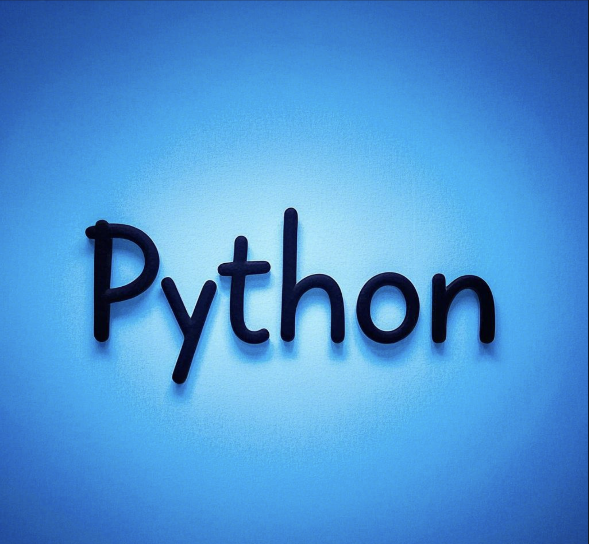

开源项目
七个开源仓库加两个课程实践，按“能否立刻体验、工程完整度、问题难度”排序，每一项都给出可打开的链接。


SceneLine
面向语言学习者的 AI 配音练习平台：FunASR 常驻进程实现实时语音识别，40+ Edge TTS 音色按性别与地区筛选，支持多角色分角色评分，并提供带数据持久化的 Docker 部署。

Scripts to Audiobook
把格式化脚本转成多角色有声书：接入 Edge、ElevenLabs、讯飞、百度四家 TTS，内置加权音色匹配引擎与 61 音色目录，支持专辑化管理，输出合并 MP3 与 SRT 字幕。

Podcast Studio
输入话题即可成片：用 Perplexity sonar-pro 检索新闻并生成多轮对话脚本，逐段匹配 Edge TTS 音色，再用 ffmpeg 合并成单条 MP3，两分钟左右产出一期节目。
Book to Audiobook
把 EPUB、MOBI、AZW3、PDF、TXT 转成带章节标记的 M4B / MP3 有声书，可选 TTS 供应商，支持 pip 直接安装的命令行用法。
Edge Read Chrome (ReadAloud)
Chrome 朗读扩展：使用 Edge 神经网络音色逐词高亮朗读，通过 native messaging 而非 Web Speech API，内置微信读书、书香中国、QQ 阅读、豆瓣等站点的正文提取。
课程实践
下面两个是课程期间的整理成果，没有公开仓库，保留在此是为了说明学习路径。

Building Generative AI Applications with Gradio
课程 Notebook 与配套智能体：跟着课程用 Gradio 构建并部署生成式 AI 应用；课程仓库目前未公开，智能体可在线体验。

AI Python for Beginners with GLM-4
吴恩达 AI Python 入门课程的学习伙伴，配合基于 GLM-4 的智能体边学边问；课程仓库目前未公开，智能体可在线体验。